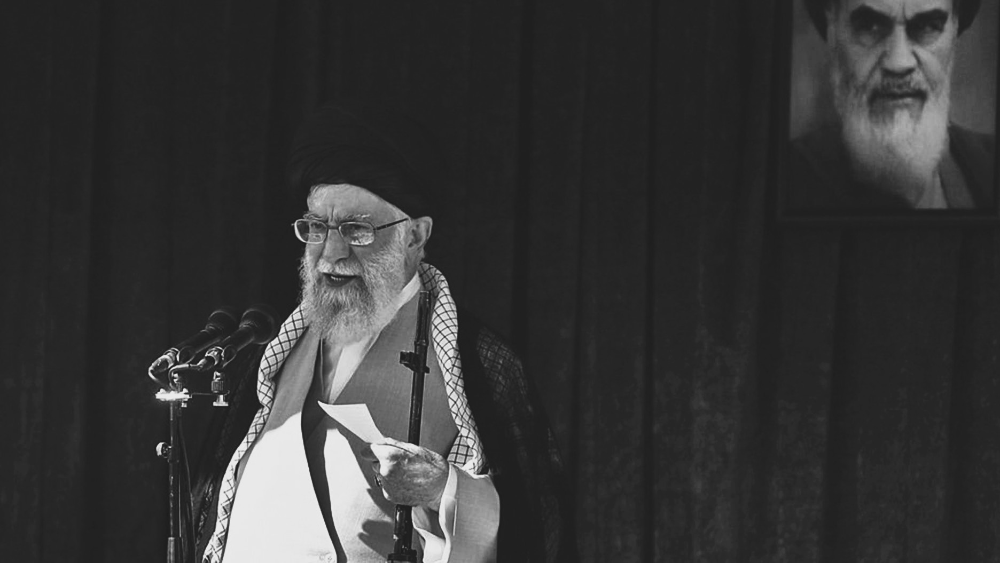

Laith Abulhareth
ليث أبو الحارث

تحليل · أبريل ٢٠٢٦
الدولة التي لا تلين: لماذا لن تقبل "إسرائيل" أبداً ببقاء إيران حيّة
بقلم ليث أبو الحارث
English
العربية
اللغة
الشكل
مقالة
نقاط
نُشر أصلًا على abulhareth.com · أبريل ٢٠٢٦